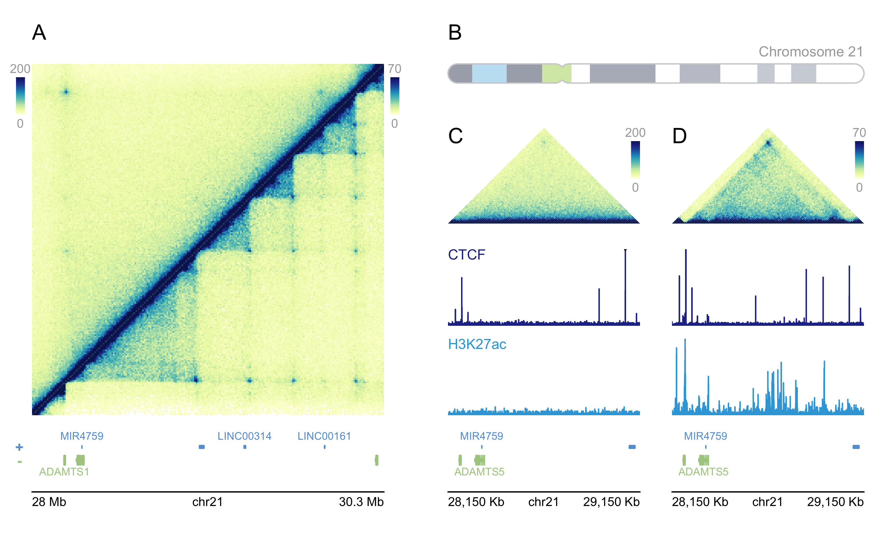

Overview
plotgardener is a genomic data visualization package for R. Using grid graphics, plotgardener empowers users to programmatically and flexibly generate multi-panel figures. plotgardener accomplishes these goals by utilizing 1) a coordinate-based plotting system, and 2) edge-to-edge containerized data visualization. The coordinate-based plotting system grants users precise control over the size, position, and arrangement of plots. Its edge-to-edge plotting functions preserve the mapping between user-specified containers and the represented data. This allows users to stack plots with confidence that vertically aligned data will correspond to the same regions. For more information about plotgardener’s philosophy and design, check out the Our Philosophy page.
Specialized for genomic data, plotgardener also contains functions to read and plot multi-omic data quickly and easily. These functions are integrated with Bioconductor packages to flexibly accommodate a large variety of genomic assemblies. plotgardener can address an endless number of use cases, including: dynamic exploration of genomic data, arrangment into multi-omic layouts, and survey plotting for quickly viewing data across the genome. Check out our vignettes for detailed examples and suggested use cases!
Installation
plotgardener can be installed from Bioconductor version 3.14 (R version 4.1) as follows:
if (!requireNamespace("BiocManager", quietly = TRUE))
install.packages("BiocManager")
BiocManager::install(version = "3.14")
BiocManager::install("plotgardener")Example datasets and files are included with the package plotgardenerData:
BiocManager::install("plotgardenerData")Usage

## Load libraries and datasets
library("plotgardener")
library("org.Hs.eg.db")
library("TxDb.Hsapiens.UCSC.hg19.knownGene")
library("plotgardenerData")
library("AnnotationHub")
data("GM12878_HiC_10kb")
data("IMR90_HiC_10kb")
data("GM12878_ChIP_CTCF_signal")
data("IMR90_ChIP_CTCF_signal")
data("GM12878_ChIP_H3K27ac_signal")
data("IMR90_ChIP_H3K27ac_signal")
## Create a plotgardener page
pageCreate(width = 7, height = 4.25, default.units = "inches")
##########################
######## Panel A #########
##########################
## Text section label
plotText(label = "A", fontsize = 12,
x = 0.25, y = 0.25, just = "left", default.units = "inches")
## Set genomic and dimension parameters in a `params` object
params_a <- pgParams(chrom = "chr21", chromstart = 28000000, chromend = 30300000,
assembly = "hg19",
x = 0.25, width = 2.75, just = c("left", "top"), default.units = "inches")
## Double-sided Hi-C Plot
hicPlot_top <- plotHicSquare(data = GM12878_HiC_10kb, params = params_a,
zrange = c(0, 200), resolution = 10000,
half = "top",
y = 0.5, height = 2.75)
hicPlot_bottom <- plotHicSquare(data = IMR90_HiC_10kb, params = params_a,
zrange = c(0, 70), resolution = 10000,
half = "bottom",
y = 0.5, height = 2.75)
## Annotate Hi-C heatmap legends
annoHeatmapLegend(plot = hicPlot_bottom, fontsize = 7,
x = 3.05, y = 0.5,
width = 0.07, height = 0.5, just = c("left", "top"),
default.units = "inches")
annoHeatmapLegend(plot = hicPlot_top, fontsize = 7,
x = .125, y = 0.5,
width = 0.07, height = 0.5, just = c("left", "top"),
default.units = "inches")
## Plot gene track
genes_a <- plotGenes(params = params_a, stroke = 1, fontsize = 6,
y = 3.35, height = 0.4)
## Annotate genome label
annoGenomeLabel(plot = genes_a, params = params_a,
scale = "Mb", fontsize = 7,
y = 3.85)
##########################
######## Panel B #########
##########################
## Text section label
plotText(label = "B", fontsize = 12,
x = 3.5, y = 0.25, just = "left", default.units = "inches")
## Plot ideogram
plotIdeogram(chrom = "chr21", assembly = "hg19",
x = 3.5, y = 0.5,
width = 3.25, height = 0.15, just = c("left", "top"), default.units = "inches")
## Add text to ideogram
plotText(label = "Chromosome 21", fontsize = 8, fontcolor = "darkgrey",
x = 6.75, y = 0.4, just = "right", default.units = "inches")
##########################
######## Panel C #########
##########################
## Text section label
plotText(label = "C", fontsize = 12,
x = 3.5, y = 1, just = c("left", "top"), default.units = "inches")
## Set genomic and dimension parameters in a `params` object
params_c <- pgParams(chrom = "chr21", chromstart = 28150000, chromend = 29150000,
assembly = "hg19",
x = 3.5, width = 1.5, default.units = "inches")
## Set signal track data ranges
ctcf_range <- pgParams(range = c(0, 77),
assembly = "hg19")
hk_range <- pgParams(range = c(0, 32.6),
assembly = "hg19")
## Plot Hi-C triangle
hic_gm <- plotHicTriangle(data = GM12878_HiC_10kb, params = params_c,
zrange = c(0, 200), resolution = 10000,
y = 1.75, height = 0.75, just = c("left", "bottom"))
## Annotate Hi-C heatmap legend
annoHeatmapLegend(plot = hic_gm, fontsize = 7,
x = 5, y = 1, width = 0.07, height = 0.5,
just = c("right", "top"), default.units = "inches")
## Plot CTCF signal
ctcf_gm <- plotSignal(data = GM12878_ChIP_CTCF_signal, params = c(params_c, ctcf_range),
fill = "#253494", linecolor = "#253494",
y = 1.95, height = 0.6)
## CTCF label
plotText(label = "CTCF", fontcolor = "#253494", fontsize = 8,
x = 3.5, y = 1.95, just = c("left","top"), default.units = "inches")
## Plot H3K27ac signal
hk_gm <- plotSignal(data = GM12878_ChIP_H3K27ac_signal, params = c(params_c, hk_range),
fill = "#37a7db", linecolor = "#37a7db",
y = 3.25, height = 0.6, just = c("left", "bottom"))
## H3K27ac label
plotText(label = "H3K27ac", fontcolor = "#37a7db", fontsize = 8,
x = 3.5, y = 2.65, just = c("left","top"), default.units = "inches")
## Plot genes
genes_gm <- plotGenes(params = params_c, stroke = 1, fontsize = 6,
strandLabels = FALSE,
y = 3.35, height = 0.4)
## Annotate genome label
annoGenomeLabel(plot = genes_gm, params = params_c,
scale = "Kb", fontsize = 7,
y = 3.85)
##########################
######## Panel D #########
##########################
## Text section label
plotText(label = "D", fontsize = 12,
x = 5.25, y = 1, just = c("left", "top"), default.units = "inches")
## Set genomic and dimension parameters in a `params` object
params_d <- pgParams(chrom = "chr21", chromstart = 28150000, chromend = 29150000,
assembly = "hg19",
x = 6.75, width = 1.5, default.units = "inches")
## Plot Hi-C triangle
hic_imr <- plotHicTriangle(data = IMR90_HiC_10kb, params = params_d,
zrange = c(0, 70), resolution = 10000,
y = 1.75, height = 0.75, just = c("right", "bottom"))
## Annotate Hi-C heatmap legend
annoHeatmapLegend(plot = hic_imr, fontsize = 7, digits = 0,
x = 6.75, y = 1, width = 0.07, height = 0.5, just = c("right", "top"))
## Plot CTCF signal
ctcf_imr <- plotSignal(data = IMR90_ChIP_CTCF_signal, params = c(params_d, ctcf_range),
fill = "#253494", linecolor = "#253494",
y = 1.95, height = 0.6, just = c("right", "top"))
## Plot H3K27ac signal
hk_imr <- plotSignal(data = IMR90_ChIP_H3K27ac_signal, params = c(params_d, hk_range),
fill = "#37a7db", linecolor = "#37a7db",
y = 3.25, height = 0.6, just = c("right", "bottom"))
## Plot gene track
genes_imr <- plotGenes(params = params_d, stroke = 1, fontsize = 6,
strandLabels = FALSE,
y = 3.35, height = 0.4, just = c("right", "top"))
## Annotate genome label
annoGenomeLabel(plot = genes_imr, params = params_d,
scale = "Kb", fontsize = 7, digits = 0,
y = 3.85, just = c("right", "top"))
## Hide page guides
pageGuideHide()A word of caution
plotgardener is incredibly flexible and functional. However, due to this flexibility and like all programming packages, it may not always prevent users from making unintentional mistakes. If plot sizes are entered incorrectly or data is mishandled, it is possible to connect multi-omic data incorrectly. Make sure you utilize package features that reduce human error and increase re-usability of code to get the most mileage out of plotgardener.